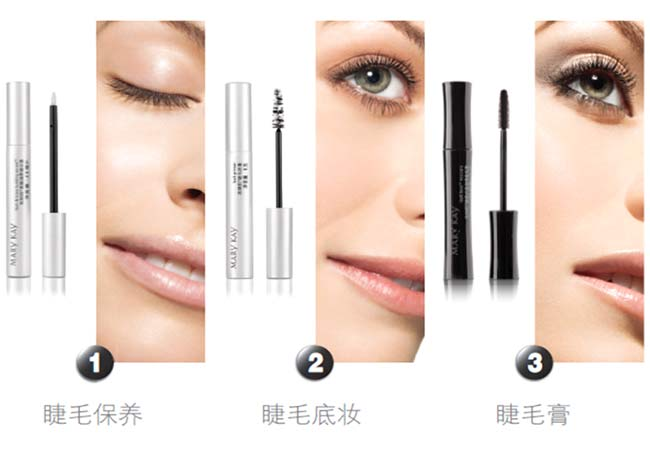

眼神的灵动少不了长长睫毛的点缀，浓密卷翘的睫毛总是会让你的大眼睛忽闪忽闪，分外动人。那你知道吗？我们的睫毛如同肌肤般，同样需要精心的护理，现在就来看一下美睫三步曲的魔力吧！
美睫三步曲的魔力在于，睫毛保养、睫毛底妆、睫毛膏。做好滋养护理的同时帮你立即变身芭比娃娃，让双眼更生动迷人！

Q：为什么睫毛需要滋养呢？
A：睫毛在毛发中的寿命最短，平均寿命只有3-5个月，它也要经过生长期、休眠期、脱落期的不停循环。其生长期只有1个月，而休眠期却能长达3-5个月，脱落期约3-5天。我们的睫毛毛囊在眼睑皮肤中扎根较浅，容易掉落，因此，睫毛特别需要细致周到的护理。
Q：美睫滋养精华露对睫毛有什么帮助？
A：美睫滋养精华露是必备睫毛保养品。它可以抗氧化，保护睫毛，同时能有效防止睫毛因脆弱而断裂或稀少。此外，它还可以强韧睫毛，减少卸妆过程中睫毛的掉落。所以，在你进行肌肤护理的同时，别忘了给睫毛也来点滋养哦。
Q：刷睫毛膏之前为什么一定要用底膏上睫毛底妆呢？
A：完美彩妆始于完美底妆。睫毛也一样。睫毛底妆是完美眼妆的第一步，就像粉底可以均匀肤色、保护肌肤一样，睫毛底膏可以增长、浓密、保护睫毛，使用后睫毛瞬间滋润，并能保持这种顺滑健康的状态，为睫毛膏上妆做好准备。
| |
美睫魔法小秘技
● 可搭配不同效果睫毛膏增强效果。先使用加长型睫毛膏延展睫毛长度再使用浓密型睫毛膏加强睫毛浓度，就可以打造根根分明的浓密卷翘睫毛
● 想要让睫毛膏效果更持久，可以最后刷一层防水性睫毛膏
● 想要迅速有效卸除眼妆，一定要用清爽卸妆液卸除 |
| |